전자기기기능사 (2016-04-02 기출문제)
1과목: 전기전자공학
1. 연산증폭기의 연산의 정확도를 높이기 위해 요구되는 사항이 아닌 것은?
- 좋은 차단특성을 가져야 한다.
- 큰 증폭도와 좋은 안정도를 필요로 한다.
- 많은 양의 부귀환을 안정하게 걸 수 있어야 한다.
- 높은 주파수의 발진출력을 지속적으로 내야 한다.
(정답률: 69%)

2. 정격 전압에서 100W의 전력을 소비하는 전열기에 정격 전압의 60% 전압을 가할 때의 소비 전력은 몇 W 인가?
- 36
- 40
- 50
- 60
(정답률: 62%)
3. 다음 정전압 안정화 회로에서 제너다이오드 ZD의 역할은? (단, 입력 전압은 출력 전압보다 높다.)
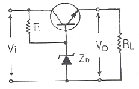
- 정류 작용
- 기준전압 유지 작용
- 제어 작용
- 검파 작용
(정답률: 71%)
4. 단상 전파정류기의 DC 출력전압은 단상 반파정류기 DC 출력 전압의 몇 배인가?
- 2
- 3
- 4
- 5
(정답률: 82%)
5. 10진수 0~9를 식별해서 나타내고 기억하는 데에는 몇 비트의 기억 용량이 필요한가?
- 2비트
- 3비트
- 4비트
- 7비트
(정답률: 79%)
6. 다음 중 N형 반도체를 만드는데 사용되는 불순물의 원소는?
- 인듐(In)
- 비소(As)
- 갈륨(Ga)
- 알루미늄(Al)
(정답률: 83%)
7. 다음과 같은 회로의 명칭은?
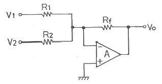
- 미분회로
- 적분회로
- 가산기형 D/A 변환회로
- 부호 변환회로
(정답률: 71%)
8. 적분기 회로를 구성하기 위한 회로는?
- 저역통과 RC 회로
- 고역통과 RC 회로
- 대역통과 RC 회로
- 대역소거 RC 회로
(정답률: 77%)
9. 다음 중 광전 변환 소자가 아닌 것은?
- 포토 트랜지스터
- 태양 전지
- 홀 발전기
- CCD(Charge Coupled Device) 센서
(정답률: 67%)
10. 커패시터 중에서 고주파 회로와 바이패스(Bypass) 용도로 많이 사용되며 비교적 가격이 저렴한 커패시터는?
- 세라믹 커패시터
- 마일러 커패시터
- 탄탈 커패시터
- 전해 커패시터
(정답률: 78%)
11. 실제적인 R-L-C 병렬 공진 회로에서 R이 2Ω, L은 400uH, C는 250pF일 경우에 공진 주파수는 약 몇 kHz 인가?
- 200
- 300
- 450
- 500
(정답률: 42%)
12. LC 발진기에서 일어나기 쉬운 이상 현상이 아닌 것은?
- 기생 진동(parasitic oscillator)
- 자왜(磁歪) 현상
- 블로킹(blocking) 현상
- 인입 현상(pull-in phenomenon)
(정답률: 75%)
13. 집적회로(Integrated Circuit)의 장점이 아닌 것은?
- 신뢰성이 높다.
- 대량 생산할 수 있다.
- 회로를 초소형으로 할 수 있다.
- 주로 고주파 대전력용으로 사용된다.
(정답률: 82%)
14. 3 단자 레귤레이터 정전압 회로의 특징이 아닌 것은?
- 발진 방지용 커패시터가 필요하다.
- 소비 전류가 적은 전원 회로에 사용 한다.
- 많은 전력이 필요한 경우에는 적합하지 않다.
- 전력소모가 적어 방열 대책이 필요 없는 장점이 있다.
(정답률: 70%)
15. B급 푸시풀 증폭기에 대한 설명으로 옳은 것은?
- 효율이 낮은 대신 왜곡이 거의 없다.
- 무선 통신에서 고주파인 반송파 전력 증폭회로에 사용된다.
- A급 전력 증폭 회로에 비해 전력 효율이 좋다.
- 교차 일그러짐 현상이 없다.
(정답률: 75%)
2과목: 전자계산기일반
16. 전자기파에 대한 설명 중 틀린 것은?
- 전자기파는 수중의 표면에서 일어나는 현상을 관찰하는데 이용된다.
- 전자기파란 주기적으로 세기가 변화하는 전자기장이 공간으로 전파해 나가는 것을 말한다.
- 전자기파는 우주 공간에서 전파의 전달이 불가능하다.
- 전자기파는 매질이 없어도 진행할 수 있다.
(정답률: 76%)
17. 다음 중 제어장치의 역할이 아닌 것은?
- 명령을 해독한다.
- 두 수의 크기를 비교한다.
- 입출력을 제어한다.
- 시스템 전체를 감시 제어한다.
(정답률: 78%)
18. 레지스터와 유사하게 동작하는 임시 저장장소로써 다음 실행할 명령어의 주소를 기억하는 기능을 하는 것은?
- 레지스터
- 프로그램 카운터
- 기억장치
- 플립플롭
(정답률: 74%)
19. (1011010)2를 8진수와 16진수로 변환하면?
- (132)8, (5A)16
- (132)8, (5B)16
- (131)8, (5A)16
- (131)8, (50)16
(정답률: 73%)
20. 순서도(flowchart)의 특징이 아닌 것은?
- 프로그램 코딩(coding)의 기초 자료가 된다.
- 프로그램 코딩 전 기초 자료가 된다.
- 오류 수정(debugging)이 용이하다.
- 사용하는 언어에 따라 기호, 형태도 달라진다.
(정답률: 84%)
21. CPU와 입출력 사이에 클록 신호에 맞추어 송, 수신 하는 전송 제어방식을 무엇이라 하는가?
- 직렬 인터페이스(serial interface)
- 병렬 인터페이스(parallel interface)
- 동기 인터페이스(synchronous interface)
- 비동기 인터페이스(asynchronous interface)
(정답률: 75%)
22. 마이크로프로세서에서 가산기를 주축으로 구성된 장치는?
- 제어장치
- 입출력장치
- 산술논리 연산장치
- 레지스터
(정답률: 83%)
23. 2진수 10101에 대한 2의 보수는?
- 11001
- 01010
- 01011
- 11000
(정답률: 79%)
24. 컴퓨터의 주기억장치와 주변장치 사이에서 데이터를 주고 받을 때, 둘 사이의 전송속도 차이를 해결하기 위해 전송할 정보를 임시로 저장하는 고속 기억장치는?
- Address
- Buffer
- Channel
- Register
(정답률: 67%)
25. 비수치적 연산에서 하나의 레지스터에 기억된 데이터를 다른 레지스터로 옮기는데 사용되는 연산은?
- OR
- AND
- SHIFT
- MOVE
(정답률: 80%)
26. 주변 장치의 입출력 방법이 아닌 것은?
- 데이지체인 방법
- 트랩 방법
- 인터럽트 방법
- 폴링 방법
(정답률: 60%)
27. 데이터베이스를 사용할 때, 데이터베이스에 접근할 수 있는 하부언어로 구조적 질의어라고도 하는 언어는?
- 포트란(FORTRAN)
- C
- 자바(java)
- SQL
(정답률: 67%)
28. 입출력장치와 CPU 사이에 존재하는 속도차를 줄이기 위해 사용하는 것은?
- bus
- channel
- buffer
- device
(정답률: 59%)
29. 직류 출력 전압이 무부하시 250V이고, 전부하시 출력 전압이 200V이었다. 전압 변동률은 몇 %인가?
- 10
- 15
- 20
- 25
(정답률: 61%)
30. 수신기에서 잡음 측정을 할 때 300Hz 이상을 차단시키는 경우 용하는 필터는?
- 랜덤필터
- 고역필터
- 중역필터
- 저역필터
(정답률: 57%)
3과목: 전자측정
31. 다음 그림의 변조도 m은?
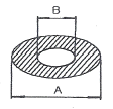
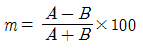
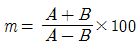
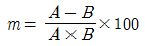
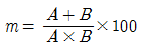
(정답률: 77%)
32. 영위 측정법의 원리를 이용하여 측정량을 전기적인 양으로 변환하여 브리지 또는 전위차계를 연결시켜 측정하는 계기는?
- 열전형 계기
- 자동평형 계기
- 가동코일형 검류계기
- 진동편형 주파수계기
(정답률: 54%)
33. 측정자의 눈금 오독, 부주의로 발생하는 오차는?
- 이론 오차
- 우연 오차
- 계기 오차
- 개인 오차
(정답률: 82%)
34. 소인 발진기의 측정 용도로 가장 적합한 것은?
- 전자회로의 출력 전압
- 전자회로의 전류 특성
- 전자회로의 주파수 특성
- 전자회로의 전압 특성
(정답률: 66%)
35. 다음 중 가장 높은 주파수를 측정할 수 있는 것은?
- 헤테로다인 주파수계
- 공동 주파수계
- 흡수형 주파수계
- 동축 주파수계
(정답률: 53%)
36. 고주파 영역에서 전력을 측정하는 방법이 아닌 것은?
- 의사부하법
- C-C형 전력계
- 볼로미터 전력계
- 전류력계형 전력계
(정답률: 48%)
37. 저항과 전류를 측정하여 전력을 구하는 간접 측정에서 저항계의 계급이 1.0급이다. 전류계의 측정 정도는 얼마가 되는 것이 가장 적당한가?
- 0.5%
- 1%
- 2%
- 4%
(정답률: 49%)
38. 직류 전기에너지를 지속적인 교류 전기에너지로 변환시키는 장치를 무엇이라 하는가?
- 복조기
- 변조기
- 발진기
- 증폭기
(정답률: 49%)
39. 그림과 같은 맥동 전류를 열전대로 측정하였더니 5A를 지시하였다. 이것을 가동코일형 전류계로 측정하면 그 지시값은 몇 A 인가? (단, 계기는 반파를 이용한 것으로 한다.)
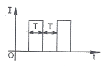
- 35.4
- 3.54
- 2.54
- 4.54
(정답률: 64%)
40. 아날로그 계측기와 비교시 디지털 계측기에만 반드시 필요한 것은?
- 비교기
- 증폭기
- A/D 변환기
- D/A 변환기
(정답률: 77%)
41. 다음 그림은 VHS 방식 카세트테이프의 후면 모양을 나타내었다. 구멍 H의 역할은?
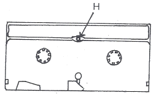
- 오소거 방지
- 종단 검출용 램프 장착
- 릴 브레이크 해제
- 테이프 사용시간 구분
(정답률: 76%)
42. 대화형 입력장치가 아닌 것은?
- 디지타이저
- 라이터 펜 방식
- 터치 패널
- 리피터
(정답률: 61%)
43. 제어 대상에 속하는 양, 제어 대상을 제어하는 것을 목적으로 하는 양은 무엇인가?
- 목표값
- 제어량
- 외란
- 조작량
(정답률: 73%)
44. 청력 검사기(Audiometer)에서 신호음으로 사용하는 신호의 파형은?
- 삼각파
- 톱니파
- 사인파
- 구형파
(정답률: 68%)
45. 파장이 1m인 전파의 주파수는 몇 MHz 인가? (단, 빛의 속도는 3×108m/s이다.)
- 0.3
- 3
- 30
- 300
(정답률: 65%)
4과목: 전자기기 및 음향영상기기
46. 출력의 전력이 500W인 송신기의 공중선에 5A의 전류가 흐를 때 복사 저항은 몇 Ω 인가?
- 10
- 20
- 30
- 40
(정답률: 57%)
47. 컬러텔리비전 수상기의 구성 요소가 아닌 것은?
- 변조 회로
- 영상 회로
- 음성 회로
- 편향 회로
(정답률: 53%)
48. 다음 중 광기전력 효과를 이용한 것은?
- 태양전지
- 전자냉동
- 전장발광
- 루미네센스
(정답률: 70%)
49. 영상의 가장 밝은 부분에서부터 가장 어두운 부분을 단계로 표시하는 것을 무엇이라 하는가?
- 화소
- 계조
- 비트맵
- 추출
(정답률: 67%)
50. 라디오존데(radiosonde)로 측정할 수 없는 것은?
- 온도 측정
- 습도 측정
- 기압 측정
- 주파수 측정
(정답률: 66%)
51. 초음파를 이용한 응용 분야로 틀린 것은?
- 세척기
- 구멍 뚫기 가공
- GPS
- 의학적 치료
(정답률: 73%)
52. 장, 중파용에 사용되는 공중선으로 적합하지 않은 것은?
- 수직 안테나
- 우산형 안테나
- T형 안테나
- 반파장 다이플 안테나
(정답률: 59%)
53. 유도가열(induction heating)의 특징에 대한 설명으로 틀린 것은?
- 내부가열이 가능하며, 표피층만 가열이 가능하다.
- 효율을 높이기 위해서 저주파가 필요하다.
- 비접촉 가열이 가능하다.
- 국부 및 균열 가열이 쉽다.
(정답률: 53%)
54. VTR에서 테이프의 속도를 일정하게 유지하기 위한 기구는?
- 임피던스 롤러
- 핀치 롤러
- 캡스턴
- 텐션 포스트
(정답률: 70%)
55. VTR용 Head의 자성재료에 요구되는 특성으로 틀린 것은?
- 실효 투자율이 높을 것
- 가공성이 좋을 것
- 잡음발생이 적을 것
- 마모성이 클 것
(정답률: 79%)
56. 강한 직류 자장을 자기 테이프에 가하여 녹음에 의한 잔류 자기를 자화시켜 소거하는 방법은?
- 교류 소거법
- 소거 헤드법
- 직류 소거법
- 직류 바이어스법
(정답률: 64%)
57. 어떤 물질 1kg의 온도를 1℃ 올리는데 필요한 열량을 무엇이라 하는가?
- 대기압
- 응축
- 비열
- 압력
(정답률: 82%)
58. 서보 기구에 관한 일반적인 조건으로 옳은 것은?
- 조작력이 강해야 한다.
- 추종속도가 느려야 한다.
- 서보 모터의 관성은 매우 커야 한다.
- 유압식의 경우 증폭부에 트랜지스터 증폭부나 자기 증폭기가 사용된다.
(정답률: 54%)
59. 뇌파의 신호 형태가 아닌 것은?
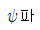
- α파
- δ파
- θ파
(정답률: 70%)
60. 다음과 같은 전달함수를 합성할 때 G(S)는?
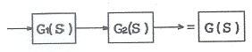
- G1(S) • G2(S)
- G1(S) + G2(S)
- G1(S) - G2(S)
- G2(S) - G1(S)
(정답률: 64%)